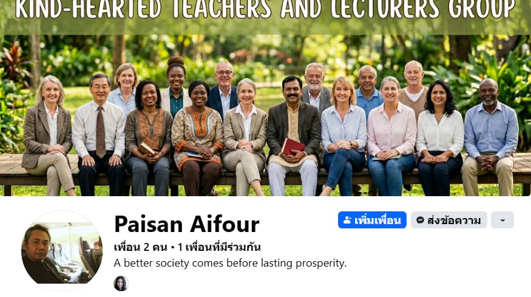
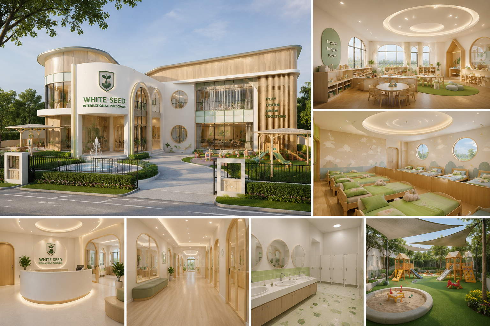

School Activities


Learning Through Play & Happiness
Thank you for visiting our website!
~ We look forward to getting to know you ~
At White Seed International Preschool, our goal is to create a warm,
safe, and inspiring learning environment that helps children, parents,
and our professional educators grow to their fullest potential.
Using a child development approach, we believe that play helps children
develop new skills and understand ideas through their own experiences.
Our teachers work to “create the environment” by designing engaging
and flexible classrooms that respond to children’s interests and needs.
Our curriculum is developed through observation, reflection,
and documentation. We work closely together with parents because
we believe that everyone, from every country around the world,
can benefit when all people take part in our
White Seed International Preschool community.
Thank you, everyone.

A modern VIP international preschool environment designed for 2-year-old children with safe classrooms, creative learning spaces, nap rooms, indoor and outdoor play areas, and multicultural experiences.
Our school focuses on learning through creativity, kindness, languages, music, family values, social development, and cultural exchange.
Learning through play, music, family values, social development, creativity, and safe activities for young children.
Email: whiteseedinternationalpreschool@proton.me
Thailand Branch & International Branch
Further location details will be announced later.
Hiring Teachers
We are looking for kind, caring, and creative teachers to join our international preschool community.
Qualifications:
• Love and care for young children
• Positive attitude and strong teamwork skills
• Ability to communicate in English and Thai;
knowledge of Japanese or Chinese is a plus
• Teachers with 20 years or more of educational experience
are especially welcome
• Preferred age range: 55–75 years old
• Experience in early childhood education is an advantage
• International teachers are welcome
Our school focuses on:
• Creative and joyful learning
• Family values and social development
• Music, culture, and language learning
• A safe and multicultural environment
Thailand Branch & International Branch
Further location details will be announced later.
Email:
whiteseedinternationalpreschool@proton.me